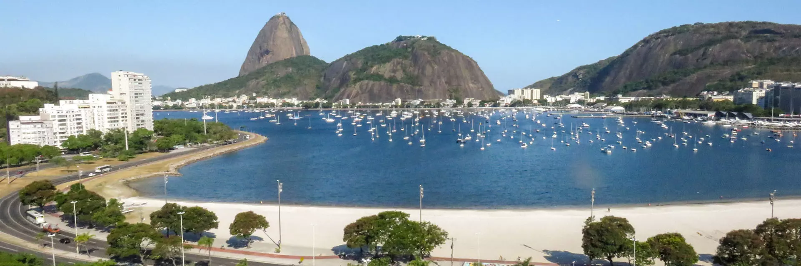
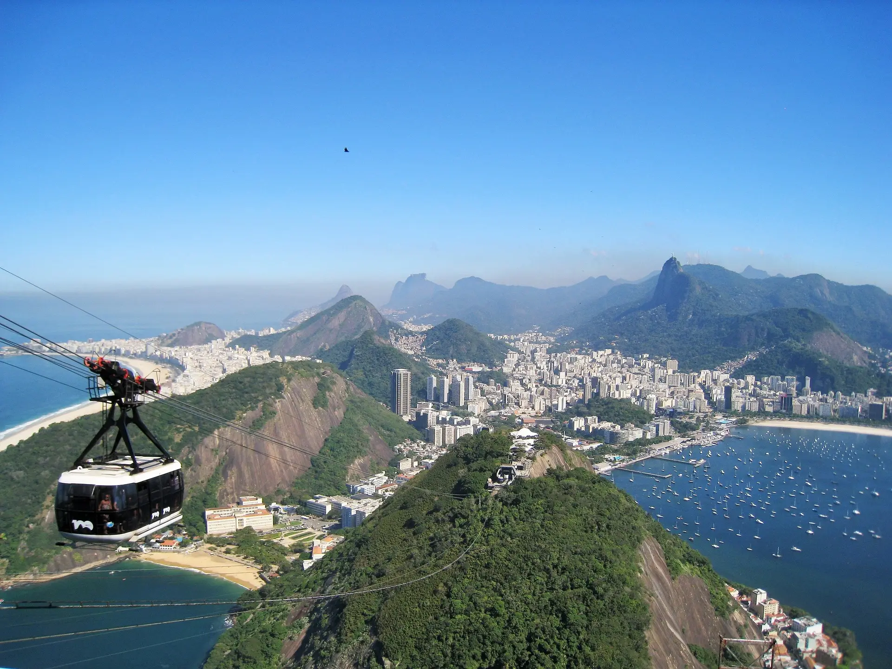
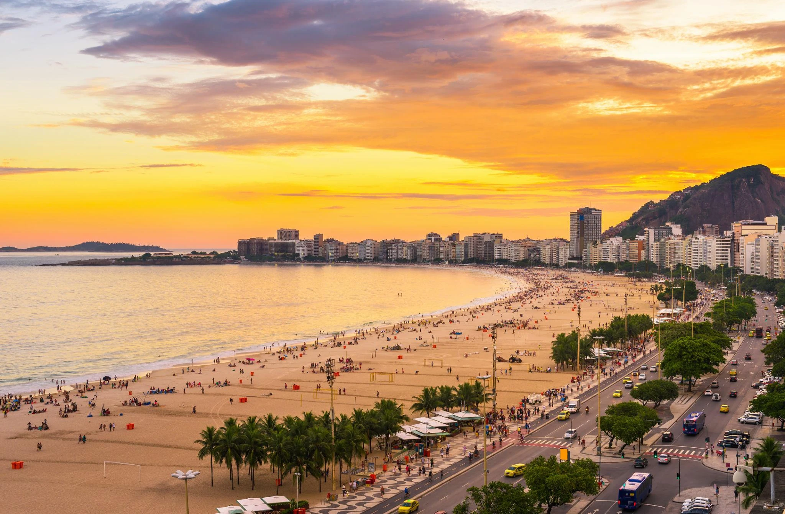
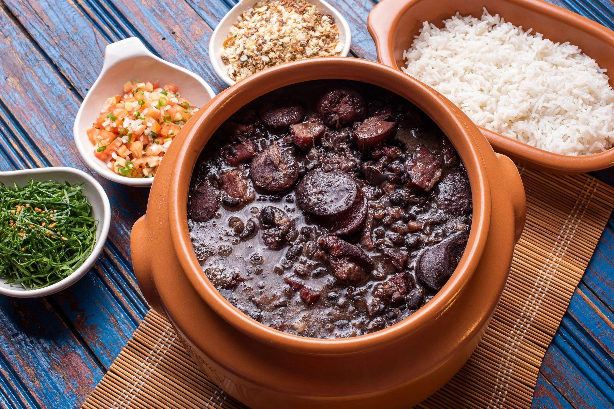
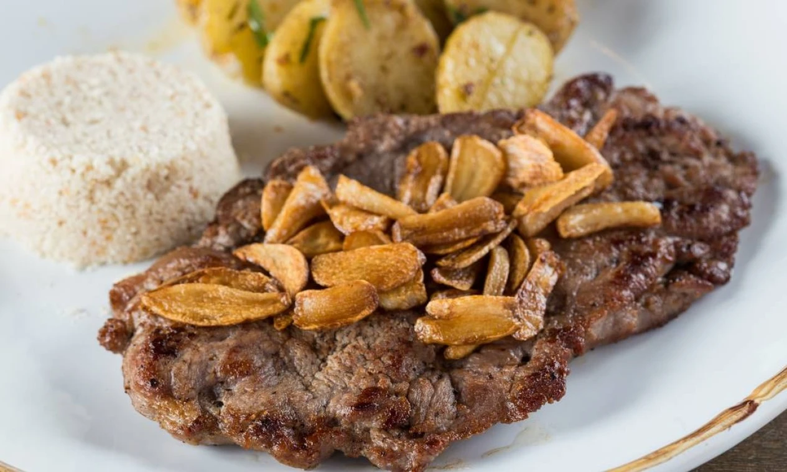
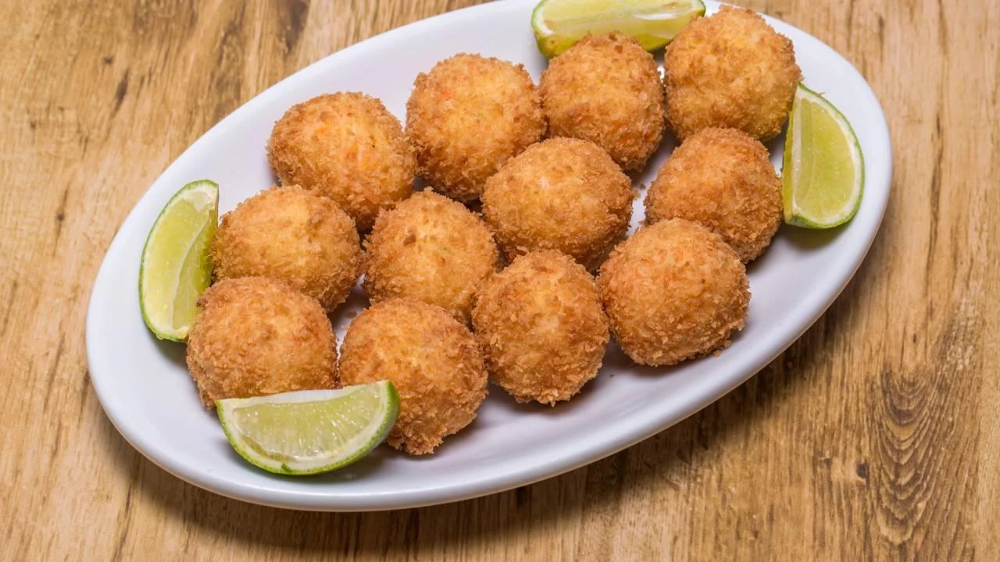

Capital
Rio de Janeiro
Conheça destinos, culturas, sabores e paisagens de todas as regiões
brasileiras.
Destinos, culturas e paisagens
incríveis te esperam.
O Rio de Janeiro é um dos estados mais conhecidos do Brasil, famoso por suas belas praias, paisagens naturais, riqueza cultural e importância histórica. Localizado na Região Sudeste, o estado atrai milhões de turistas todos os anos por suas atrações naturais, arquitetura histórica, festas populares e gastronomia diversificada.

Rio de Janeiro
Aproximadamente 43.750 km²
Cerca de 17 milhões de habitantes
Sudeste

Localizado no topo do Morro do Corcovado, o Cristo Redentor é um dos maiores símbolos do Brasil e uma das Sete Maravilhas do Mundo Moderno. A estátua oferece uma vista panorâmica e privilegiada da capital.

O Pão de Açúcar é um famoso complexo de morros interligados por bondinhos. Do topo, os visitantes podem apreciar uma das mais belas paisagens urbanas do mundo, englobando a Baía de Guanabara e as praias oceânicas.

Conhecida internacionalmente, Copacabana possui uma extensa faixa de areia, o famoso calçadão de pedras portuguesas, excelente infraestrutura turística e é palco de grandes eventos globais, como o Réveillon.

Prato preparado com feijão preto e diferentes cortes de carne suína e bovina. É tradicionalmente servido com arroz branco, couve refogada, farofa e fatias de laranja.

Prato típico da boemia carioca, composto por um filé-mignon alto coberto com bastante alho frito, acompanhado de arroz, farofa de ovos e batatas portuguesas.

O bolinho de bacalhau é uma herança da influência portuguesa na culinária fluminense. Feito com bacalhau desfiado, batata e temperos, é um dos petiscos mais tradicionais encontrados em bares e restaurantes do estado.
Predominantemente tropical atlântico. Verões: Quentes e úmidos, com temperaturas frequentemente acima de 30°C e pancadas de chuva no fim do dia. Invernos: Amenos e mais secos, com temperaturas médias entre 18°C e 25°C. Dica: A melhor época para turismo de exploração urbana e caminhadas é entre maio e setembro, quando o índice de chuvas é menor.
Capital (Rio de Janeiro): Ideal para praias urbanas, grandes monumentos, museus e vida noturna.
Capital (Rio de Janeiro): Ideal para praias urbanas, grandes monumentos, museus e vida noturna.
Experimente a tradicional feijoada aos fins de semana. Aproveite os frutos do mar frescos nas regiões litorâneas (Região dos Lagos e Costa Verde). Prove os doces portugueses nas tradicionais confeitarias do centro da capital. Não deixe de vivenciar o clássico "mate com biscoito" estendido na areia da praia.
Experimente a tradicional feijoada aos fins de semana. Aproveite os frutos do mar frescos nas regiões litorâneas (Região dos Lagos e Costa Verde). Prove os doces portugueses nas tradicionais confeitarias do centro da capital. Não deixe de vivenciar o clássico "mate com biscoito" estendido na areia da praia.